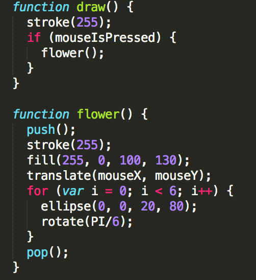

function flower() {
}
2.translate() object with your mouse position
translate(mouseX, mouseY);
note: rotate(angle)
for (var i = 0; i < 6; i++) {
ellipse(0, 0, 20, 80);
rotate(PI/6);
}
4. Set the stroke() color and fill the flower
note: you may add the fourth value in fill, which stands for transparency (fully transparent -- 0, not transparent -- 255)
stroke(255);
fill(255, 0, 100, 130);
5.Add press event
if (mouseIsPressed) {
flower();
}
6. Final Code

See How it is like? Press your mouse!